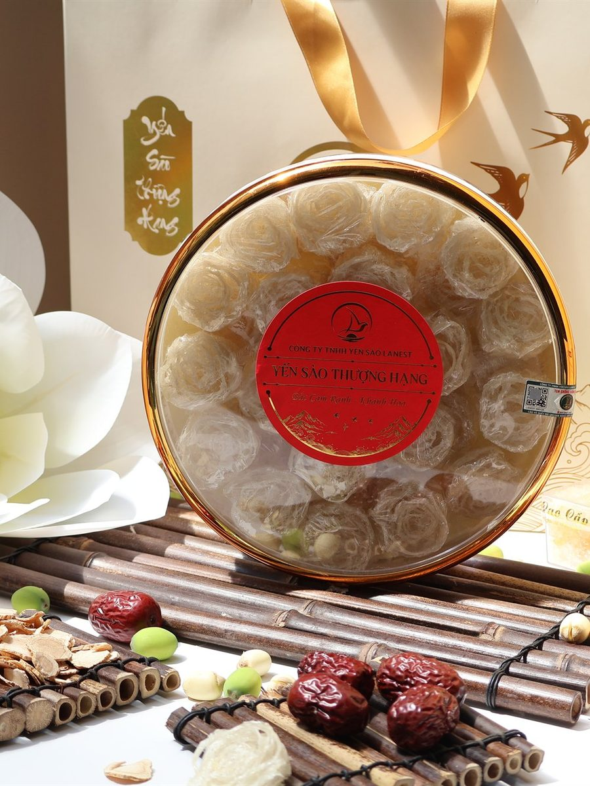
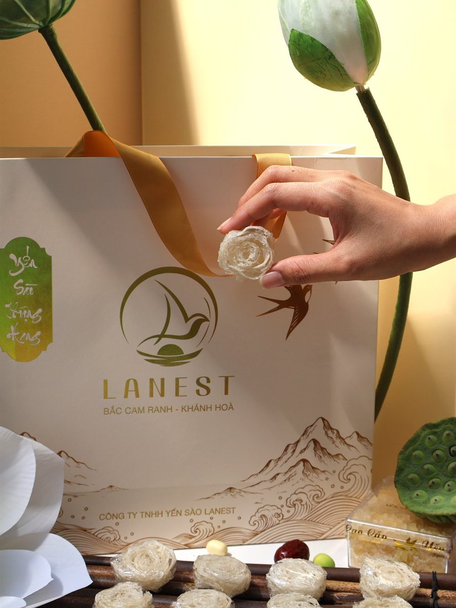

Yến Tinh Chế Hoa Hồng Là Gì? Cách Ngâm, Chưng Và Cất Từng Bông Yến
Yến Sào Lanest · Đăng ngày 22/11/2026

Cuối tháng 10/2026, Lanest đưa lên website một sản phẩm mới trong dòng tổ yến tinh chế: yến tinh chế hoa hồng. Sợi yến đã làm sạch được đắp thành từng bông nhỏ, mỗi bông bọc riêng, xếp đều trong hộp tròn nắp trong. Nhiều anh chị nhắn hỏi: bông yến này có khác gì tổ yến tinh chế thường, chưng thế nào, mỗi lần dùng mấy bông. Bài này trả lời đúng những gì Lanest đang có, chỗ nào còn phải hỏi thêm cũng nói rõ.
Hộp yến tinh chế hoa hồng: hộp tròn nắp trong, từng bông yến xếp sát nhau
1. Yến tinh chế hoa hồng là gì?
Đây vẫn là yến tinh chế, tức yến đã được làm sạch lông và tạp chất, mua về chỉ cần ngâm rồi chưng, không phải tự ngồi nhặt lông như tổ yến thô. Điểm khác nằm ở hình dáng: thay vì đắp thành tổ, sợi yến được đắp thành từng bông hình hoa hồng.
- Từng bông bọc riêng: lấy bông nào ra dùng thì các bông còn lại vẫn nằm yên trong lớp bọc của mình.
- Hộp tròn nắp trong: nhìn qua nắp là thấy cả hộp xếp đều như một bó hoa, nên nhiều người chọn làm quà.
- Giá: liên hệ. Dòng tinh chế và thô của Lanest không niêm yết giá trên website, anh chị gọi hotline để nhân viên báo theo quy cách hộp.
Muốn hiểu chung về hai dòng yến khô, xem bài tổ yến thô và yến tinh chế.
2. Khác gì tổ yến tinh chế thường?
| Tổ yến tinh chế | Yến tinh chế hoa hồng | |
| Đã làm sạch lông | Có | Có |
| Hình dáng | Đắp thành tổ | Đắp thành từng bông nhỏ |
| Đóng gói | Hộp hút ẩm 50g hoặc 100g | Hộp tròn nắp trong, từng bông bọc riêng |
| Cách dùng | Ngâm nước lạnh cho nở mềm, rồi chưng cách thủy lửa nhỏ | |
Có một điều Lanest muốn nói thẳng: trọng lượng mỗi bông và số bông trong một hộp, Lanest chưa đưa lên website. Khi đặt hàng, anh chị hỏi nhân viên hai con số này để tính khẩu phần cho đúng. Ai đang phân vân giữa hộp lớn và hộp nhỏ của dòng tổ tinh chế thường thì xem bài yến tinh chế hộp 50g hay 100g.
3. Ngâm một bông yến hoa hồng bao lâu?
Yến tinh chế đã sạch lông nhưng vẫn là yến khô, nên phải ngâm trước khi chưng. Luôn ngâm bằng nước lạnh, nước sạch, không dùng nước ấm hay nước nóng.
Mốc ngâm Lanest đang hướng dẫn cho các loại yến tinh chế: yến vụn khoảng 10 phút, yến tinh chế sợi khoảng 30–40 phút, chân yến tinh chế khoảng 30–45 phút. Bông yến hoa hồng nhỏ, nên anh chị cứ canh từ mốc ngắn: thấy bông yến đã tơi ra, sợi mềm và nở đều là được. Ngâm lâu không làm yến nở thêm, chỉ làm sợi bở.
4. Chưng cách thủy cho giữ sợi
- Cho bông yến đã ngâm vào thố sứ hoặc hũ thủy tinh chịu nhiệt, thêm nước vừa ngập yến.
- Đậy nắp, đặt vào nồi nước, chưng lửa nhỏ khoảng 20–30 phút, nước bên ngoài không sôi mạnh. Cẩm nang tổng quan của Lanest ghi mốc ngắn hơn (15–20 phút), lần đầu cứ canh từ mốc này.
- Yến chín khi nước có bọt tăm nhẹ và sợi yến nổi lên.
- Khoảng 5 phút trước khi tắt bếp mới cho đường phèn, hoặc nấu nước đường riêng rồi rót vào. Người cần hạn chế đường thì giảm hoặc bỏ đường.
Thích thêm vị thì chưng cùng táo đỏ, hạt sen hoặc kỷ tử. Với táo đỏ, cho táo vào chưng trước khoảng 10 phút rồi mới thả yến. Các mốc chi tiết theo từng loại yến có trong bài chưng yến cách thủy bao lâu.

Một bông yến hoa hồng lấy ra khỏi hộp, sẵn sàng để ngâm
5. Một lần dùng mấy bông?
Hướng dẫn dùng yến của Lanest tính theo trọng lượng yến khô: người trưởng thành mỗi lần khoảng 5–10g, dùng đều khoảng 2–3 lần mỗi tuần, nhiều nhất 3–5 lần. Vì vậy, số bông cho mỗi lần chưng phụ thuộc vào trọng lượng một bông, đó là lý do anh chị nên hỏi con số này khi mua.
- Chọn lúc bụng nhẹ: sáng sớm, hoặc buổi tối trước khi ngủ khoảng một tiếng. Không ăn ngay sau bữa chính.
- Dùng đều đặn tốt hơn ăn dồn mấy ngày rồi bỏ ngang.
- Yến là thực phẩm, không phải thuốc. Người đang điều trị bệnh, đang dùng thuốc hoặc đang mang thai nên hỏi bác sĩ trước khi dùng thường xuyên. Bài ai không nên ăn yến nói kỹ hơn.
6. Cất hộp yến hoa hồng thế nào?
- Hộp chưa mở: để nơi khô ráo, thoáng mát, tránh nắng và hơi ẩm. Hạn sử dụng xem trên bao bì.
- Hộp đã mở: lấy bông yến bằng tay khô, đậy kín nắp ngay. Yến tinh chế đã mở hộp nên dùng trong vòng 6 tháng.
- Yến đã chưng: để nguội, đậy kín, cất ngăn mát và dùng trong 1–2 ngày. Mỗi lần chỉ nên chưng vừa đủ.
Những chỗ không nên cất yến trong nhà có trong bài cách bảo quản tổ yến. Nếu mua yến hoa hồng để biếu dịp cuối năm, bài quà biếu yến sào có thêm gợi ý chọn quà theo người nhận.
Câu hỏi thường gặp
Yến tinh chế hoa hồng có phải yến thật không?
Đây là một mẫu của dòng yến tinh chế Lanest, đi theo cùng cam kết của dòng này: 100% yến thật, không pha trộn, không tẩy trắng, không chất bảo quản.
Yến tinh chế hoa hồng giá bao nhiêu?
Lanest không niêm yết giá dòng tinh chế trên website. Anh chị gọi 0258 6278 627 để nhân viên báo giá theo hộp, kèm số bông và trọng lượng mỗi bông.
Ngâm bông yến hoa hồng bao lâu?
Ngâm nước lạnh, canh từ mốc ngắn của dòng tinh chế. Khi bông yến tơi ra, sợi mềm và nở đều là chưng được, không cần ngâm lâu.